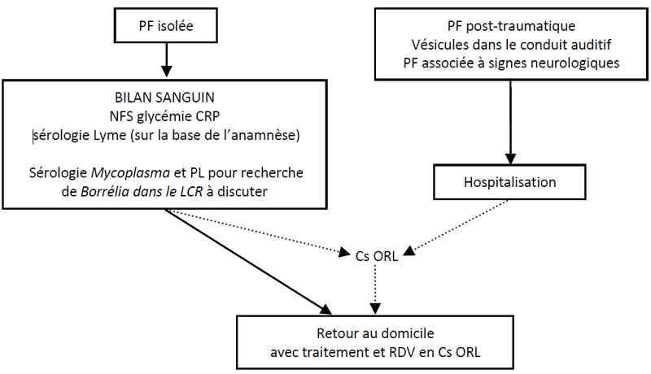

Bienvenue Sur Medical Education
Paralysie faciale de l'enfant
EnfantSpécialité : neurologie / orl / pédiatrie /
Points importants
-
La paralysie faciale (PF) périphérique est le plus souvent une paralysie faciale a frigore qui s’améliorera progressivement
-
Il est important de différencier la paralysie périphérique de la paralysie centrale (nucléaire)
-
Il faut aussi éliminer une autre cause de PF périphérique par un examen clinique soigneux (neurologique et ORL complet)
-
Le traitement est médical dans la quasi-totalité des PF
-
Le patient doit être prévenu du risque de séquelles, en particulier après une PF complète (avis ORL nécessaire)
Présentation clinique / CIMU
SIGNES FONCTIONNELS
Présentation clinique / CIMU
SIGNES FONCTIONNELS
Généraux
- Aucun si PF a frigore
Spécifiques
- Asymétrie du visage (traits déviés du côté sain)
- Signe de Charles Bell (l'occlusion de l'œil est impossible et entraîne son ascension vers le haut et l'extérieur)
- Signe des cils de Souques (lors de la fermeture forcée des paupières, les cils apparaissent plus longs du côté paralysé)
- Difficulté pour souffler, siffler, mastiquer
- Abolition des réflexes cornéens, naso-palpébral, de clignement à la menace
- Agueusie possible (2/3 antérieurs de la langue)
- Hyperacousie douloureuse du côté atteint
- Sécrétions salivaires et lacrymales parfois diminuées
CONTEXTE
Terrain
- Diabète
- Neuropathies (héréditaires ou acquises)
Traitement usuel
- Corticoïdes
Antécédents
- Traumatisme
- Viroses récentes (PF post-infectieuse)
- Maladies chroniques (diabète, neuropathies, pathologies malformatives faciales)
- Malades en forêt (borréliose)
Facteurs de risque
- PF centrale
- Autres signes neurologiques associés
Circonstances de survenue
- Progressive ou brutale
EXAMEN CLINIQUE
Différencier la paralysie périphérique de la paralysie centrale (voir « Diagnostic étiologique »)
Etablir la gravité (classification de House)
-
Grade 1 :
- fonction normale
-
Grade 2 :
- asymétrie discrète
- fermeture palpébrale complète
-
Grade 3 :
- asymétrie évidente ne défigurant pas le sujet lors de la mimique
- syncinésie possible
- fermeture palpébrale complète à l’effort
- faiblesse légère ou modérée labiale et frontale
-
Grade 4 :
- asymétrie sévère défigurant le sujet lors mimique
- fermeture palpébrale incomplète à l’effort.
- spasmes et/ou syncinésies sévères
- absence de mouvement au niveau front, asymétrie labiale
-
Grade 5 :
- asymétrie au repos et mouvements à peine perceptibles
-
Grade 6 :
- paralysie faciale complète (contraction impossible)
Examen neurologique completà la recherche d’atteinte des autres paires crâniennes et de signes de focalisation
Otoscopie
- Recherche d’OMA, otite chronique, vésicules de Ramsay Hunt (zona)
EXAMENS PARACLINIQUES SIMPLES
- Glycémie capillaire (exclure début de diabète, même si association très rare en pédiatrie)
CIMU
- Tri 2 pour les PF post-traumatiques
- Tri 3-4 pour les autres
Signes paracliniques
BIOLOGIQUES
-
NFS (exclure leucémies qui peuvent donner une infiltration du VII, surtout avant de débuter les corticoïdes)
-
CRP (névrites inflammatoires)
-
Sérologie de Lyme (si notion de balade en forêt, érythème migrans) : indication éventuelle à PL avec recherche de borrelia dans le LCR
-
Plusieurs virus peuvent donner des paralysies périphériques du VII, ainsi que le Mycoplasma pneumoniae. Leur recherche n’est pas nécessaire en cas de premier épisode de résolution rapidement spontanée
IMAGERIE
-
Scanner des rochers : si traumatisme ou notion de chute
-
IRM cérébrale si :
-
paralysie centrale du VII
-
atteinte des autres paires crâniennes
-
et/ou aggravation/absence d’amélioration dans les jours qui suivent (exclure pathologie tumorale)
-
Echographie de la parotide (si masse au niveau du cou)
-
Prévoir un EMG/VCN en cas de PF persistante (utile à des fins pronostiques)
Diagnostic étiologique
-
La plus fréquente est la paralysie faciale a frigore ou idiopathique (Bell) :
-
strictement unilatérale
-
diagnostic d’élimination (voir « Diagnostic différentiel »)
- paralysie centrale du VII
- atteinte des autres paires crâniennes
- et/ou aggravation/absence d’amélioration dans les jours qui suivent (exclure pathologie tumorale)
Diagnostic étiologique
-
La plus fréquente est la paralysie faciale a frigore ou idiopathique (Bell) :
- strictement unilatérale
- diagnostic d’élimination (voir « Diagnostic différentiel »)
Diagnostic différentiel
Aplasie congénitale du triangle des lèvres
- Absence d’abaissement de la commissure labiale lors des pleurs, parfois non diagnostiquée à la naissance
PF d’origine centrale(nucléaire)
- Prédomine sur le facial inférieur
- Lésion siégeant dans le tronc cérébral
-
Signes neurologiques associés :
- déficit moteur homolatéral
- aphasie
- troubles sensitifs
- hémianopsie
PF zostérienne
- Eruption et hypoesthésie de la zone de Ramsay-Hunt, douleurs
- Atteinte possible des ganglions de Corti (surdité régressive) et de Scarpa (vertiges)
- Réaction méningée possible (signes méningés)
PF du nouveau-né
- Traumatique (accouchement) : régression spontanée en quelques semaines
-
Malformative :
- agénésie nerveuse
- syndrome de Moebius
- Hypercalcémie (évaluer une possible intoxication à la Vitamine D pour erreur de dosage de la part des parents)
PF traumatiques
-
Accidentelles :
- fracture du rocher
- plaie de la parotide
-
Post-opératoires :
- chirurgie otologique
- neurinome de l’acoustique
- parotidectomie
PF otitiques
- Otite moyenne aiguë ou otite chronique (cholestéatome)
- Nécessité d’une otoscopie minutieuse (avis ORL si difficultés)
PF tumorales
- Paralysie habituellement progressive
-
Tumeurs du rocher :
- cholestéatome
- paragangliome
- méningiome intra-pétreux…
-
Tumeurs de l’angle ponto-cérébelleux :
- neurinome de l’acoustique
- métastase
- anévrisme
- Tumeurs de la parotide
- Gliomes
- Hémopathie maligne (leucémies le plus souvent)
PF associées à pathologies neurologiques
- Neurofibromatose type 2 (neurinome de l’angle ponto-cérébelleux)
- Sclérose en plaques
- Syndrome de Guillain-Barré, autres polyradiculites
- Neurosarcoïdose
- Méningite tuberculeuse
- Vasculopathies (AVC antérieur, thrombose de l’artère basilaire, anévrysme, hémorragie intracrânienne)
Traitement
TRAITEMENT PREHOSPITALIER / INTRAHOSPITALIER
Pour toutes les PF
- Protection oculaire par compresse (ou Steristrip®) la nuit
- Larmes artificielles et vitamine A pommade pendant la journée, avec instillations fréquentes
- Consultation ophtalmologique à la moindre suspicion de kératite (douleurs)
- La blépharoraphie peut s’avérer nécessaire dans les formes prolongées
PF a frigore
- Grade 2 : pas de corticoïdes (guérison spontanée)
- Grade 3-6 : corticoïdes (avis ORL si grade 5-6)
- Les antiviraux ne sont pas indiqués car inefficaces
- La décompression chirurgicale est exceptionnellement indiquée, jamais d’emblée (formes sévères et persistantes)
PF secondaire à zona
- Aciclovir PO (en considération de la gravité, même si les études ne sont pas concluantes sur son efficacité)
- Antalgiques (paracétamol)
- Corticoïdes, à discuter après examen ophtalmologique (afin d’éliminer une contre-indication)
Autres PF
- Selon étiologie
- Si cas très évocateur de maladie de Lyme ne pas hésiter à contrôler une sérologie négative à 15 jours
MEDICAMENTS
- Aciclovir (Zovirax® Comprimé à 200 mg. Suspension buvable à 200 mg/5 ml) : 200- 400 mg 5 fois par jour pendant 7-10 jours
- Paracétamol par voie orale 10 mg/kg/4h ou 15 mg/kg/6h (Efferalgan® suspension buvable ou sachets à 80,150 et 250 mg) (Doliprane® suspension buvable ou sachets à 100, 150, 200 et 300 mg). Pour les enfants dont le poids est supérieur à 50 kg: 1/2 à 1 comprimé à 1 g par prise, à renouveler en cas de besoin au bout de 4 heures minimum. Il n'est généralement pas nécessaire de dépasser 3 g de paracétamol par jour, soit 3 comprimés.
- Prednisolone (Solupred® Comprimé effervescent à 5 mg, 20 mg. Solution buvable à 1 mg/mL avec doseur) : 1 mg/kg/j pendant 7-10 jours puis arrêt
- Vitamine A (pommade ophtalmique) : appliquer l'équivalent d'un grain de riz dans le cul-de-sac conjonctival 2 ou 3 fois/j
Surveillance
CLINIQUE
-
Apparition de nouveaux symptômes
-
Aggravation de la PF
Devenir / orientation
CRITERES D’ADMISSION
-
PF post-traumatique complète avec fracture du rocher : discuter décompression chirurgicale avec l’ORL
-
Signes d’atteinte du SNC (formes secondaires, diagnostic étiologique)
-
Vésicules dans le conduit auditif externe ou la conque (infection à VZV ou HSV, recherche immunodépression associée)
CRITERES DE SORTIE
-
Examen neurologique normal(en dehors de la PF)
-
Surveillance et intérêt de la protection oculaire bien compris par les parents
ORDONNANCE DE SORTIE
-
Corticoïdes ± aciclovir ± paracétamol (voir « traitement »)
-
Larmes artificielles, plusieurs fois par jour, à alterner avec application de vitamine A pommade ophtalmique (2-3 fois/j)
-
Pansement occlusif nocturne pour prévenir les complications oculaires
-
Exercices de kinésithérapie faciale à faire à domicile :
-
faire des bulles avec une paille dans un verre d’eau (paille mise sur le côté sain, au milieu, le côté atteint) plusieurs fois par jour
-
pour les nourrissons, augmenter la prise de biberons (eau), sucette
-
Consultation ORL J10-J15
RECOMMANDATIONS DE SORTIE
-
Reconsulter si aggravation ou apparition de nouveaux symptômes
-
En l’absence de récupération à J10-J15, prévoir aussi un EMG/VCN
Mécanisme / description
-
La PFse traduit par un déficit moteur complet ou partiel des muscles peauciers d'une moitié de la face, dont l'origine est une atteinte périphérique du nerf facial (VII), par opposition aux paralysies d'origine centrale où la lésion responsable est au niveau du tronc cérébral
-
Un certain nombre de fibres du facial supérieur se croisent pour rejoindre le faisceau radiculaire controlatéral, ce qui explique le respect partiel de l’hémiface supérieure dans les PF d’origine centrale
-
Le VII est un nerf mixte moteur mais aussi sensitif, sensoriel et sécrétoire, ce qui explique la symptomatologie variée
-
La cause la plus fréquente chez l’enfant, comme chez l’adulte, est la paralysie a frigore (idiopathique)
-
Quelque soit l’étiologie d’une PF, l’atteinte est de gravité variable, allant de la neuropraxie (réversible) à l’interruption des fascicules nerveux (neurotmésis)
Algorithme
-
Algorithme : paralysie faciale chez l’enfant
Devenir / orientation
CRITERES D’ADMISSION
- PF post-traumatique complète avec fracture du rocher : discuter décompression chirurgicale avec l’ORL
- Signes d’atteinte du SNC (formes secondaires, diagnostic étiologique)
- Vésicules dans le conduit auditif externe ou la conque (infection à VZV ou HSV, recherche immunodépression associée)
CRITERES DE SORTIE
- Examen neurologique normal(en dehors de la PF)
- Surveillance et intérêt de la protection oculaire bien compris par les parents
ORDONNANCE DE SORTIE
- Corticoïdes ± aciclovir ± paracétamol (voir « traitement »)
- Larmes artificielles, plusieurs fois par jour, à alterner avec application de vitamine A pommade ophtalmique (2-3 fois/j)
- Pansement occlusif nocturne pour prévenir les complications oculaires
-
Exercices de kinésithérapie faciale à faire à domicile :
- faire des bulles avec une paille dans un verre d’eau (paille mise sur le côté sain, au milieu, le côté atteint) plusieurs fois par jour
- pour les nourrissons, augmenter la prise de biberons (eau), sucette
- Consultation ORL J10-J15
RECOMMANDATIONS DE SORTIE
- Reconsulter si aggravation ou apparition de nouveaux symptômes
- En l’absence de récupération à J10-J15, prévoir aussi un EMG/VCN
Mécanisme / description
-
La PFse traduit par un déficit moteur complet ou partiel des muscles peauciers d'une moitié de la face, dont l'origine est une atteinte périphérique du nerf facial (VII), par opposition aux paralysies d'origine centrale où la lésion responsable est au niveau du tronc cérébral
-
Un certain nombre de fibres du facial supérieur se croisent pour rejoindre le faisceau radiculaire controlatéral, ce qui explique le respect partiel de l’hémiface supérieure dans les PF d’origine centrale
-
Le VII est un nerf mixte moteur mais aussi sensitif, sensoriel et sécrétoire, ce qui explique la symptomatologie variée
-
La cause la plus fréquente chez l’enfant, comme chez l’adulte, est la paralysie a frigore (idiopathique)
-
Quelque soit l’étiologie d’une PF, l’atteinte est de gravité variable, allant de la neuropraxie (réversible) à l’interruption des fascicules nerveux (neurotmésis)
Algorithme
-
Algorithme : paralysie faciale chez l’enfant
Algorithme
- Algorithme : paralysie faciale chez l’enfant
 _722 Algorithme Algorithme : paralysie faciale chez l'enfant
Bibliographie
-
Garne E, Dolk H, Krägeloh-Mann I, Holst Ravn S, Cans C; SCPE Collaborative Group. Cerebral palsy and congenital malformations. Eur J Paediatr Neurol. 2008 Mar;12(2):82-8. Epub 2007 Sep 19.
-
Gilden DH. Clinical practice. Bell's Palsy. N Engl J Med. Sep 23 2004;351(13):1323-31.
-
Legent F et al.ORL Pathologie cervico-faciale. Edition Masson, 1996.
-
López-Alberola RF. Neuroborreliosis and the pediatric population: a review. Rev Neurol. 2006 Apr 10;42 Suppl 3:S91-6.
-
Holland NJ, Weiner GM. Recent developments in Bell's palsy. BMJ. Sep 4 2004;329(7465):553-7.
-
Holland J., Bell's palsy. Clin Evid. 2006 Jun;(15):1745-50.
-
Kitsko DJ et al. Inner ear and facial nerve complications of acute otitis media, including vertigo. Curr Allergy Asthma Rep. 2007 Nov;7(6):444-50.
-
Ohtake PJ et al. Does electrical stimulation improve motor recovery in patients with idiopathic facial (Bell) palsy? Phys Ther. 2006 Nov;86(11):1558-64.
-
Quant EC, Jeste SS, Muni RH, Cape AV, Bhussar MK, Peleg AY. The benefits of steroids versus steroids plus antivirals for treatment of Bell's palsy: a meta-analysis. BMJ. Sep 7 2009;339:b3354.
-
Sullivan FM, Swan IR, Donnan PT, Morrison JM, Smith BH, McKinstry B. Early treatment with prednisolone or acyclovir in Bell's palsy. N Engl J Med. Oct 18 2007;357(16):1598-607.
-
Uscategui T, Doree C, Chamberlain IJ, Burton MJ. Antiviral therapy for Ramsay Hunt syndrome (herpes zoster oticus with facial palsy) in adults. Cochrane Database Syst Rev. Oct 8 2008;CD006851.
-
Veillon F et al. Pathology of the facial nerve. Neuroimaging Clin N Am. 2008 May;18(2):309-20.
Auteur(s) : Luigi TITOMANLIO, Irène D'AGOSTINO